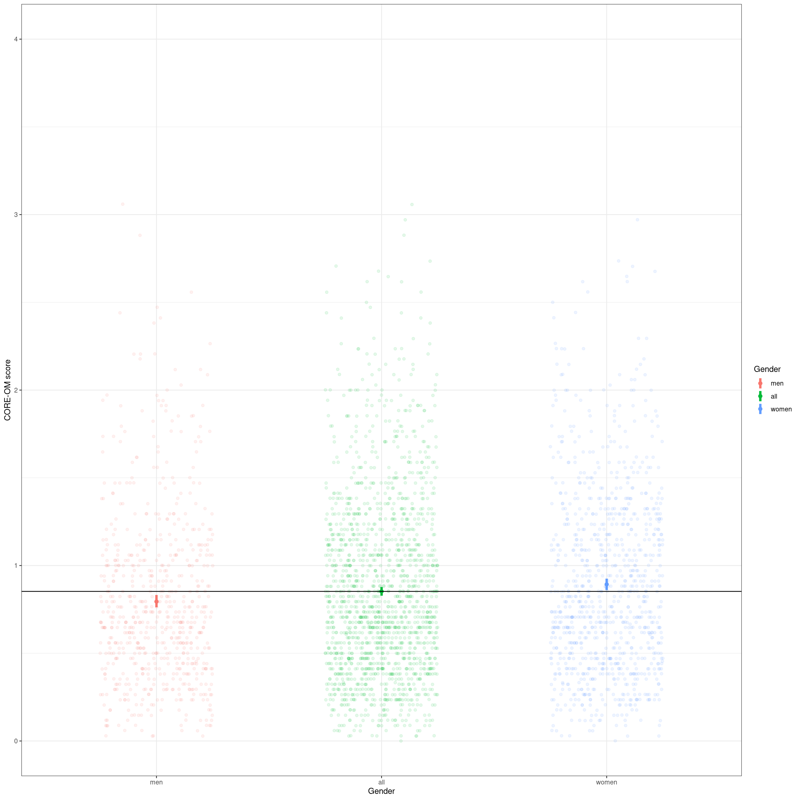

Show code
### this is just the code that creates the "copy to clipboard" function in the code blocks
htmltools::tagList(
xaringanExtra::use_clipboard(
button_text = "<i class=\"fa fa-clone fa-2x\" style=\"color: #301e64\"></i>",
success_text = "<i class=\"fa fa-check fa-2x\" style=\"color: #90BE6D\"></i>",
error_text = "<i class=\"fa fa-times fa-2x\" style=\"color: #F94144\"></i>"
),
rmarkdown::html_dependency_font_awesome()
)This builds on two earlier posts here:
* What is an empirical cumulative distribution function? and
* Confidence intervals for quantiles
Even if you are very familiar with ECDFs, quantiles and confidence intervals it may be worth at least scan reading those before reading this post.
Mapping from individual scores to population distributions
One huge issue in MH/therapy work is that we are very interested in individuals but we also need to be aware of aggregated data: to be able to take a population health and sometimes a health economic viewpoint on what our interventions offer in aggregate. There are no simple and perfect ways to be able to think about both individual and about aggregated data and no perfect ways to map individual data to large dataset data. 1
One way of mapping an individual clients score to referential data is the famous Clinical Significant Change model of the late Neil Jacobson and his colleagues. That creates a cutting point score and hence a binary categorisation: whether any individual score is more likely to be in the help-seeking (clinical) score distribution or in the non-help-seeking distribution. There are many issues with that mapping, some of which I will explore in future posts here, however its rightly been hugely important as one step away from just reporting on the effectiveness of interventions solely in terms of parametric or non-parametric statistical analysis of whether the before/after changes were statistically significant or of reporting their effect sizes.
How do quantiles offer a more nuanced way of mapping individual scores to referential dataset distributions?
If we have a large (enough) non-help-seeking dataset of scores we can use it to give us quantiles for those scores and we can take as a refential mapping. Heres a real example, n = 1,666.
Show code
vecQuantiles <- c(.05, .1, .15, .2, .3, .4, .5, .6, .7, .8, .9, .95)
tmpVecScores <- na.omit(tmpScores$score_OM_T1)
plotQuantileCIsfromDat(tmpVecScores, vecQuantiles = vecQuantiles, ci = .95, method = "N", type = 8,
addAnnotation = FALSE, printPlot = FALSE, returnPlot = TRUE,
titleText = "ECDF of CORE-OM scores with 95% CIs around the quantiles",
subtitleText = paste0("Quantiles at ",
convertVectorToSentence(vecQuantiles))) -> plotCOREOM
plotCOREOMWe can see that even with n = 1,666 the CIs of the quantiles are not very tight, more so for the higher quantiles.
Here are those quantiles and their 95% CIs, and the widths of the CIs, as a table.
Show code
prob | quantile | LCL | UCL | CIwidth |
|---|---|---|---|---|
0.05 | 0.206 | 0.176 | 0.235 | 0.059 |
0.10 | 0.265 | 0.265 | 0.294 | 0.029 |
0.15 | 0.353 | 0.324 | 0.382 | 0.059 |
0.20 | 0.412 | 0.382 | 0.441 | 0.059 |
0.30 | 0.529 | 0.500 | 0.559 | 0.059 |
0.40 | 0.647 | 0.633 | 0.676 | 0.044 |
0.50 | 0.750 | 0.735 | 0.794 | 0.059 |
0.60 | 0.882 | 0.853 | 0.917 | 0.064 |
0.70 | 1.059 | 1.029 | 1.088 | 0.059 |
0.80 | 1.235 | 1.206 | 1.294 | 0.088 |
0.90 | 1.529 | 1.471 | 1.618 | 0.147 |
0.95 | 1.853 | 1.765 | 1.912 | 0.147 |
That confirms that the CIs of the .2 and .3 quantiles (20% and 30% percentiles) touch but dont overlap so we seem to on reasonable grounds to say that we can map any score for, say, a new client asking for help, to that referential data to a these quantiles/percentiles.
Show code
(c(0, vecQuantiles, 1)) %>%
as_tibble() %>%
rename(prob = value) %>%
mutate(lwr = 100 * prob,
upr = lead(lwr),
lwr = paste0(lwr, "th"),
upr = paste0(upr, "th"),
slot = paste0("Between the ", lwr, " and the ", upr, "percentiles"),
slot = if_else(lwr == "0th", "Under the 5th percentile", slot),
slot = if_else(upr == "100th", "Above the 95th percentile", slot),
slotN = row_number()) %>%
filter(prob < 1) %>% # trim off the spurious top row created by the lead()
left_join(tmpTibQuantiles, by = "prob") %>%
select(slotN, slot, quantile) %>%
mutate(uprQuantile = lead(quantile),
### fix the end points with the minimum and maximum possible scores for the measure
quantile = if_else(is.na(quantile), 0, quantile),
uprQuantile = if_else(is.na(uprQuantile), 4, uprQuantile)) %>%
rename(lwrQuantile = quantile) -> tibQuantileSlots
tibQuantileSlots %>%
flextable() %>%
autofit()slotN | slot | lwrQuantile | uprQuantile |
|---|---|---|---|
1 | Under the 5th percentile | 0.000 | 0.206 |
2 | Between the 5th and the 10thpercentiles | 0.206 | 0.265 |
3 | Between the 10th and the 15thpercentiles | 0.265 | 0.353 |
4 | Between the 15th and the 20thpercentiles | 0.353 | 0.412 |
5 | Between the 20th and the 30thpercentiles | 0.412 | 0.529 |
6 | Between the 30th and the 40thpercentiles | 0.529 | 0.647 |
7 | Between the 40th and the 50thpercentiles | 0.647 | 0.750 |
8 | Between the 50th and the 60thpercentiles | 0.750 | 0.882 |
9 | Between the 60th and the 70thpercentiles | 0.882 | 1.059 |
10 | Between the 70th and the 80thpercentiles | 1.059 | 1.235 |
11 | Between the 80th and the 90thpercentiles | 1.235 | 1.529 |
12 | Between the 90th and the 95thpercentiles | 1.529 | 1.853 |
13 | Above the 95th percentile | 1.853 | 4.000 |
Mapping to non-help-seeking referential scores
So we can say that the size of our referential dataset has given us those 13 discriminable slots into which we can map any score. For example above 1.86 is scoring above the 95% centile from this non-help-seeking referential dataset, a score between 1.53 and 1.85 is scoring above the 90% percentile but not above the 95% percentile. We can do the same for the last scores for the clients and say that someone whose score fell from 1.86 to .7 has moved from above the 95% percentile to between the 40th and 50th.
Mapping to help-seeking referential scores
If we wanted to, and had a large referential dataset of initial scores for help-seeking clients we could do the same to map scores to that dataset to get an idea where a client stands in that distribution of initial scores: are they at the upper end (severely affected in the terms of the measure) or low. That enables us to say where a clients first score lay in that, so a score of 1.9 is above the 95% percentile from this non-help-seeking dataset but might be below the 50% percentile from the help-seeking dataset. Ideally we need quite large datasets of initial scores from services to build that referential data. UK IAPT initial scores?!
What has this given us that the CSC paradigm doesnt?
- This is a rather different approach from the CSC: rather than dichotomising the score distribution it allows us to translate any score into a quantile on non-help-seeking referential data, if we have that, and to a quantile on referential help-seeking data.
- Like the CSC this is a translation that is independent, in principle, of the measure used.
- It allows us to say much more than above/below the CSC.
- Assuming we have both non-help-seeking and help-seeking referential data and that we have repeated measures across an intervention we can map change
Can we ignore sociodemographic variables?
One thing to watch, as with any consideration of MH measure scores, is whether sociodemographic variables have sufficient impact on score distributions that we should consider those variables when creating mappings, the class (at this point in our history of dataset creation), is considering gender as a binary variable.
Lets go back to plots to explore this.
Show code
tmpScores %>%
rename(COREOMscore = score_OM_T1,
Gender = gender) %>%
filter(!is.na(Gender) & !is.na(COREOMscore)) -> tmpScores2
tmpScores2 %>%
summarise(median = median(COREOMscore)) %>%
pull() -> tmpMedian
ggplot(data = tmpScores2,
aes(y = COREOMscore, x = Gender, fill = Gender)) +
geom_boxplot(notch = TRUE,
varwidth = TRUE) +
geom_hline(yintercept = tmpMedian) +
ylim(c(0, 4)) +
ylab("CORE-OM scores")So lets apply the highly inappropriate between groups t-test to test that strong graphic evidence of a gender effect on the CORE-OM scores.
Show code
t.test(tmpVecScoresF, tmpVecScoresM)
Welch Two Sample t-test
data: tmpVecScoresF and tmpVecScoresM
t = 3.9475, df = 1517.5, p-value = 8.258e-05
alternative hypothesis: true difference in means is not equal to 0
95 percent confidence interval:
0.04939864 0.14697956
sample estimates:
mean of x mean of y
0.8928289 0.7946398 A more appropriate non-parametric Mann-Whitney (a.k.a. Wilcoxon) test.
Show code
wilcox.test(tmpVecScoresF, tmpVecScoresM)
Wilcoxon rank sum test with continuity correction
data: tmpVecScoresF and tmpVecScoresM
W = 373569, p-value = 4.675e-05
alternative hypothesis: true location shift is not equal to 0And now go back to the means but instead of using the t-test with its assumption that the population distributions are Gaussian, lets use the robust, non-parametric bootstrap CIs around the observed means.
Show code
tmpScores2 %>%
mutate(Gender = "all") -> tmpTib
bind_rows(tmpScores2,
tmpTib) -> tmpTibGenderAll
set.seed(12345)
tmpTibGenderAll %>%
group_by(Gender) %>%
summarise(CI = list(getBootCImean(COREOMscore))) %>%
unnest_wider(CI) %>%
mutate(Gender = ordered(Gender,
levels = c("men", "all", "women"))) %>%
arrange(Gender) -> tmpTibMeanByGender
tmpTibMeanByGender %>%
mutate(across(obsmean:UCLmean, round3)) %>%
flextable() %>%
autofit()Gender | obsmean | LCLmean | UCLmean |
|---|---|---|---|
men | 0.795 | 0.762 | 0.832 |
all | 0.853 | 0.828 | 0.877 |
women | 0.893 | 0.860 | 0.925 |
OK, thats clear again. (With this sample size it would be very bizarre if it werent just confirming the tests and giving us confidence intervals: indicators of the likely imprecision from the sample size.)
Going to plots as I always like to, heres a forest type plot of the means and 95% CIs. Suggests a very impressive gender effect.
Show code
tmpTibMeanByGender %>%
filter(Gender == "all") %>%
select(obsmean) %>%
pull() -> tmpMeanAll
ggplot(data = tmpTibMeanByGender,
aes(x = Gender, y = obsmean)) +
geom_point() +
geom_linerange(aes(ymin = LCLmean, ymax = UCLmean)) +
geom_hline(yintercept = tmpMeanAll)Show code
# ylim(c(0, 4)) +
ylab("CORE-OM score")$y
[1] "CORE-OM score"
attr(,"class")
[1] "labels"Show code
# getBootCIgrpMeanDiff(COREOMscore ~ Gender, tmpScores2)Of course when we put it in the context of the full range of possible CORE-OM scores and jitter the actual scores underneath the means and their CIs its less impressive.
Show code
ggplot(data = tmpTibGenderAll,
aes(x = Gender, y = COREOMscore, colour = Gender)) +
geom_jitter(width = .25,
alpha = .1) +
geom_point(data = tmpTibMeanByGender,
aes(x = Gender, y = obsmean),
size = 2) +
geom_linerange(data = tmpTibMeanByGender,
inherit.aes = FALSE,
aes(x = Gender, ymin = LCLmean, ymax = UCLmean, colour = Gender),
linewidth = 1.5) +
geom_hline(yintercept = tmpMeanAll) +
ylim(c(0, 4)) +
ylab("CORE-OM score")
OK, so we have a definite systematic effect of gender on the central location of the scores and it is incredibly unlikely that it arose by sampling vagaries (assuming random sample, i.e.no biasing effects of gender in the recruitment). However, thats all about the central location of the scores by gender whether using the median or the mean. Now we come to how the ECDF helps tell us more than these simple central location analyses.
Show code
vecGenderColours <- c("men" = "blue", "women" = "red")
ggplot(data = tmpScores2,
aes(x = COREOMscore, colour = Gender)) +
stat_ecdf() +
ylab("Probability") +
xlab("CORE-OM score") +
scale_color_manual(values = vecGenderColours) +
ggtitle("Cumulative distribution function for CORE-OM scores by gender")I always have to remind myself that the fact that ECDF line for the women is under that for the men is because the women are tending to score higher generally than the men so the quantiles for the women tend to be higher (to the right of) those for the men. A non-parametric test with the glorious name of the Kolmogorov-Smirnov test is a formal test of whether the largest absolute vertical distance between the lines is larger than you would expect to have happened had Gender had no relationship with score in the population and this just a chance sampling vagary.
Show code
ks.test(tmpVecScoresF, tmpVecScoresM)
Asymptotic two-sample Kolmogorov-Smirnov test
data: tmpVecScoresF and tmpVecScoresM
D = 0.11024, p-value = 0.0001138
alternative hypothesis: two-sidedGiven that weve seen the effects of gender on central location were not surprised to see that this is highly statistically significant.
Now we can finally come to the question of whether this matters in terms of mapping scores to quantiles now taking gender into account.
Show code
getCIforQuantiles(tmpVecScoresF, vecQuantiles = vecQuantiles) %>%
mutate(Gender = "F") -> tmpQuantilesF
getCIforQuantiles(tmpVecScoresM, vecQuantiles = vecQuantiles) %>%
mutate(Gender = "M") -> tmpQuantilesM
plotQuantileCIsfromDat(tmpVecScoresF, vecQuantiles = vecQuantiles, addAnnotation = FALSE, printPlot = FALSE, returnPlot = TRUE) -> tmpPlotF
plotQuantileCIsfromDat(tmpVecScoresM, vecQuantiles = vecQuantiles, addAnnotation = FALSE, printPlot = FALSE, returnPlot = TRUE) -> tmpPlotM
tmpPlotF / tmpPlotMShow code
Show code
by <- join_by(between(firstScore, lwrQuantile, uprQuantile))
left_join(tibChangeScores, tibQuantileSlots, by) %>%
select(-ends_with("Quantile")) %>%
rename(firstSlotN = slotN,
firstSlot = slot) -> tmpTib
by <- join_by(between(lastScore, lwrQuantile, uprQuantile))
left_join(tmpTib, tibQuantileSlots, by) %>%
select(-ends_with("Quantile")) %>%
rename(lastSlotN = slotN,
lastSlot = slot) -> tibQuantileChanges
ggplot(data = tibQuantileChanges,
aes(x = firstSlotN, y = lastSlotN)) +
geom_count() +
geom_abline(intercept = 0, slope = 1) +
ylim(c(6, 13)) +
scale_x_continuous(name = "First quantile",
breaks = tibQuantileSlots$slotN,
labels = tibQuantileSlots$slot,
limits = c(6, 13)) +
scale_y_continuous(name = "Last quantile",
breaks = tibQuantileSlots$slotN,
labels = tibQuantileSlots$slot,
limits = c(6, 13)) +
theme(axis.text.x = element_text(angle = 70,
hjust = 1),
aspect.ratio = 1)hit counter